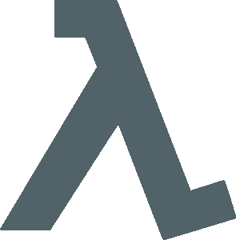
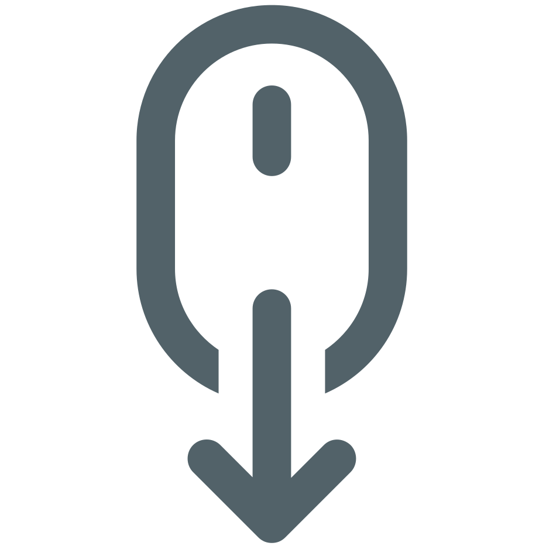

Cálculo λ não tipado
- Davidson Marra
- Pedro Henrique

Tudo são funções...
Origem do cálculo λ
Foi desenvolvido originalmente para ser uma notação não tipada e capturar
a essência da programação funcional de operadores para operandos
Estruturas de dados, números, cadeias de bits...
Mas apesar disso, são todos de um único tipo: funções
- e ::= x -- a variável é uma expresão λ
- e ::= fun(x)e -- extração funcional de e
- e ::= e(e) -- operador e aplicado ao operando e
Exemplos do cálculo λ:
Funções orquestrando funções
- value id = fun(x) x -- identidade
- value succ = fun(x) x + 1 -- sucessor
- value twice = fun(f) fun(y) f(f(y)) -- duas vezes
E poderíamos ainda aplicar a função twice:
- twice (succ) => fun(y)succ(succ(y))
- twice (fun(x)x +1) => fun(y)(fun(x) x + 1)((fun(x)x + 1) (y)
E qual limitação temos?
Como e por quê os tipos surgem?
- A função succ inevitavelmente pode ser
aplicada apenas a números inteiros
- Tipos surgem quando especializamos
uma notação não tipada
Obrigado!
Feito com JavaScript 💙